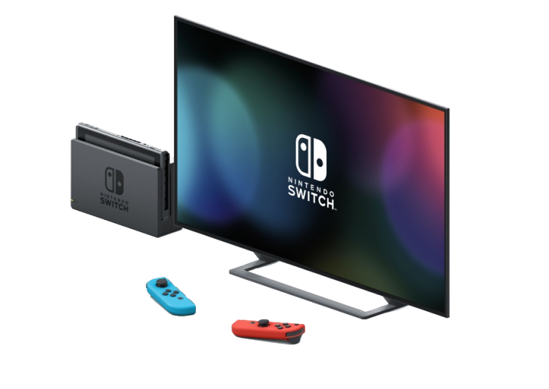
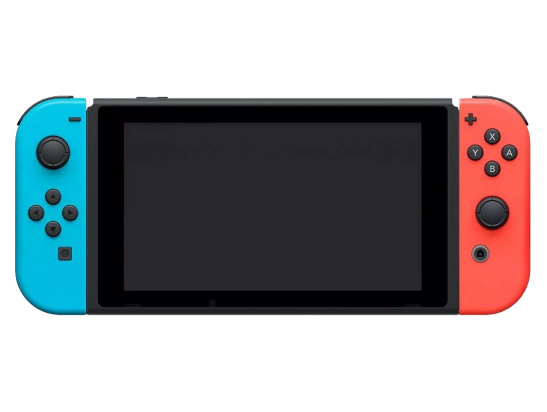
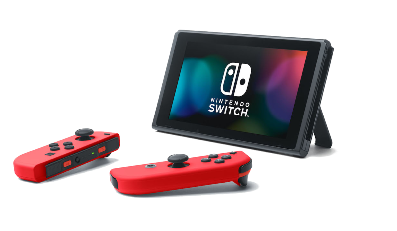
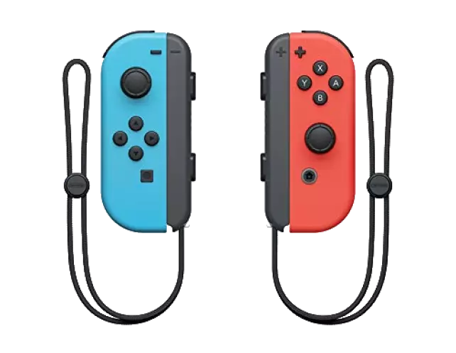

Najlepsza konsola dla całej rodziny.
Innowacyjne podejście do rozgrywki
da możliwość zabawy dla
całej rodziny i znajomych.
Stacjonarny
Przenośny
Podręczny
Nowa odsłona bestsellerowej konsoli Nintendo Switch,
zaprojektowana z myślą o grze przenośnej,
umożliwia granie w tytuły dostępne
na Nintendo Switch gdzie chcesz.
Dostępne są różne warianty kolorystyczne:
-Turkusowy
-Żółty
-Szary
-Zacian and Zamenta
...i wiele innych.
Konsola oferuje szeroki zakres tytułów na wyłączność, jak i wiele portów wcześniej
Kontroler Joy-Con oferuje nowe doznania rozgrywki, z pomocą nowoczesnych akceleometrów, żyroskopowych czujników ruchu i wibracją HD, dzięki którym podczas rozgrywki poczujesz wszystko to, co się dzieje na ekranie, od najmniejszego wstrząsu, po odczuwanie głębi dźwięków.
| Tryb Stacjonarny | Tak | Nie |
| Tryb Podręczny | Tak | Nie |
| Tryb Przenośny | Tak | Tak |
| Odłączalne Joy-Cony | Tak | Nie |
| Obrazy | 6.2" 720P | 5.5" 720P |
| Bateria | 4.5H - 9H (zależne od tytułu) | 2.5H - 6.5H (zależne od tytułu) |
| Złącza | HDMI - 1 szt. USB 3.0 - 1 szt. USB 2.0 - 2 szt. Wyjście audio - 1 szt. Czytnik kart pamięci microSD - 1 szt. | USB-C - 1 szt. Wyjście audio - 1 szt. Czytnik kart pamięci microSD - 1 szt. |
Wsparcie | Praca | Kontakt | Klasyfikacja gier | Regulamin
Język: Polski